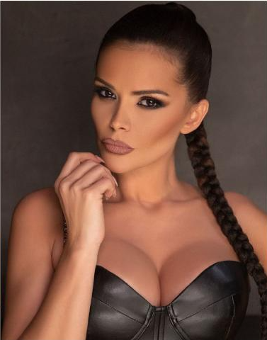
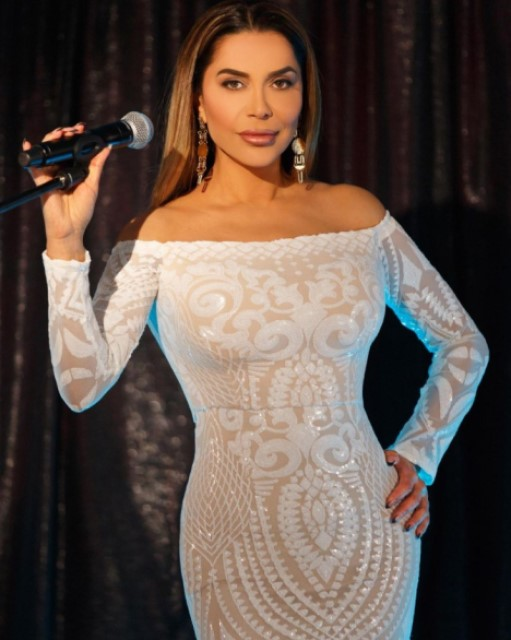
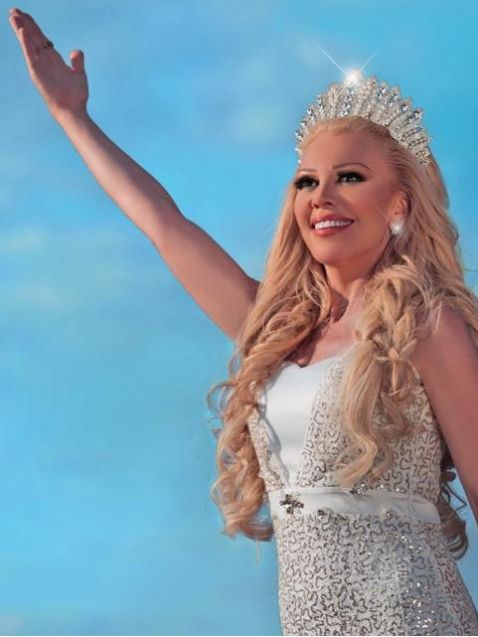

Галена
Галена е родена на 21 май 1985 г. в Смядово. Четири
години изучава народно пеене в музикалното училище в Шумен,
а две години по-късно се премества и продължава образованието си в
Димитровград.
През 2009 г. ражда първото си дете – Стефан, а през 2017 г. втория си син – Александър.
Преслава
Родена е на 26 юни 1984 г. в Добрич в семейството на Янка и Кольо Тончеви –
шивачка и международен шофьор. Има сестра, която е с три години по-голяма, и е народна певица от
музикална компания „Пайнер“ – Ивелина Колева. На 14 септември 2018 г. Преслава ражда дъщеря си Паола.

Алисия
Ася Пламенова Дойчева, по-известна като Алисия, е българска попфолк певица.
Алисия е родена на 1 март 1983 г. в град Ихтиман. Има двама братя-близнаци. Завършила е 157
ГИЧЕ „Сесар Вайехо“ в София и СУ „Св. Климент Охридски“ със специалност Социални дейности.
Бони
Бонка Симеонова Илиева, по-известна като Бони, е българска попфолк певица и актриса от
ромски произход.
Родена е в гр. Сливен на 12 декември 1973 година.

Луна Йорданова
Луна е родена на 2 април 1971 г. в гр. Шумен. Майка ѝ е от Вехтово и се казва Стоянка, а
баща
ѝ – Йордан. Има една сестра – Наталия. Луна Йорданова Йорданова, по-известна само като Луна, е
българска попфолк певица. Има издадени 10 албума и редица популярни песни, сред които „Скитница“,
„Тук-там" и др.
